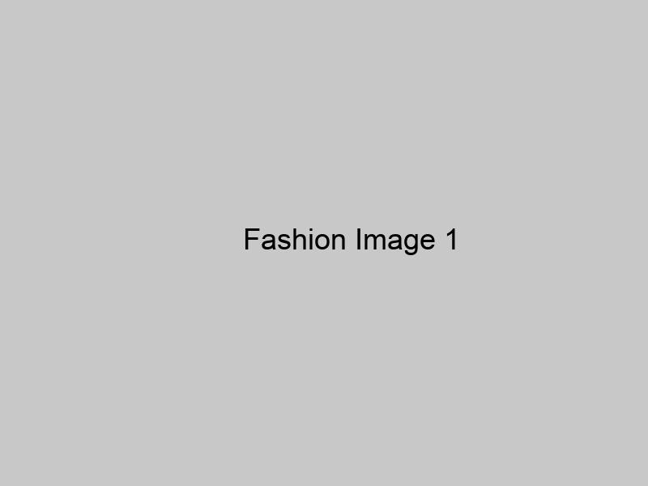
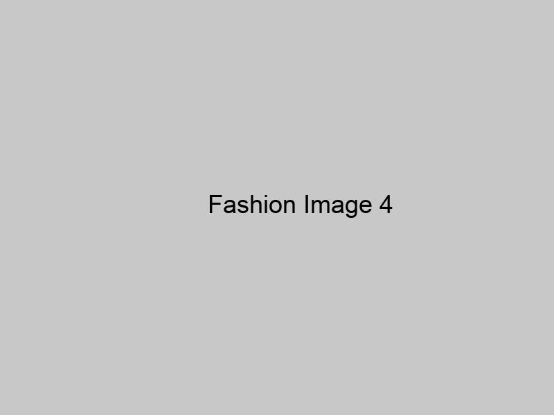
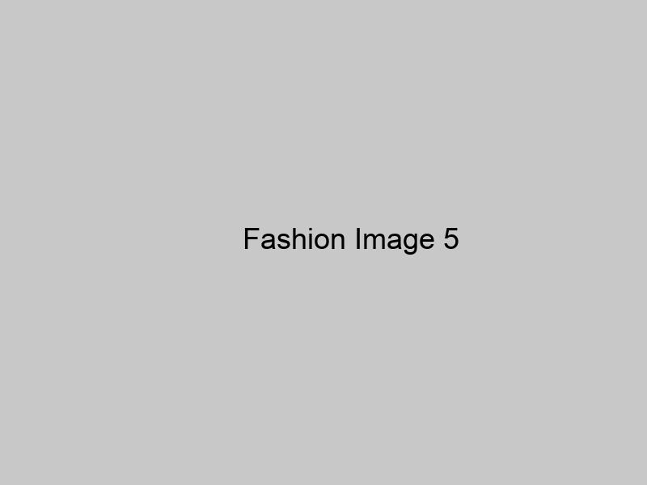
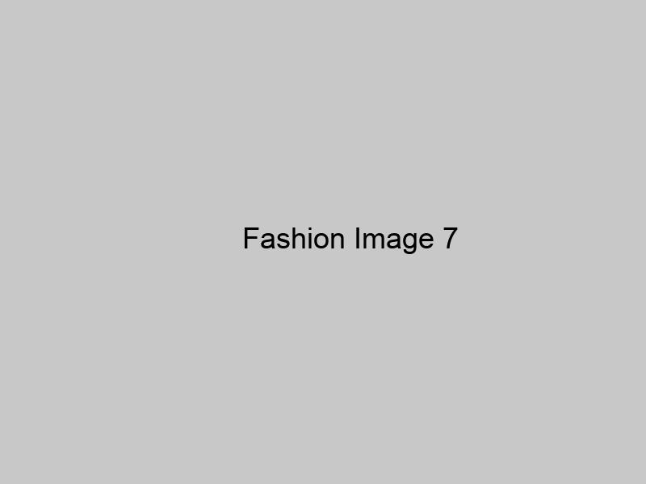
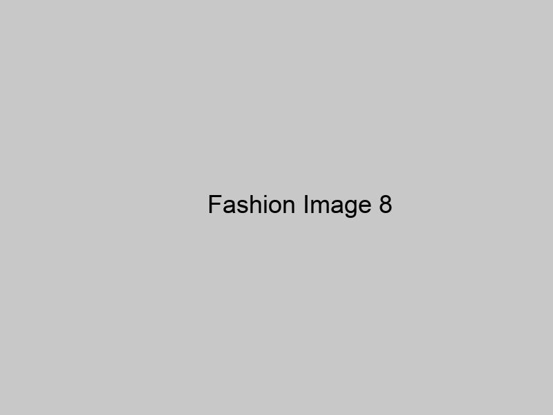

Ephemeral Elegance
Form functional fashion, designed for real people evolving through life as fast as you do.
Experience our latest collection inspired by iconic art movements, from Impressionism to Neo-Expressionism. Each piece is designed for real people evolving through life as fast as you do.
Form functional fashion, designed for real people evolving through life as fast as you do.

The Messenger archetype reaches Milestone 1: Ephemeral Elegance, drawing inspiration from Impressionism's focus on capturing fleeting moments and the interplay of light.
The ensemble invites wearers to pause and appreciate the beauty in everyday scenes, much like an Impressionist painting.
Form functional fashion, designed for real people evolving through life as fast as you do.

The Messenger archetype reaches Milestone 2: Dreamscape Dissonance, channeling the essence of Surrealism's exploration of the subconscious mind and dream-like states. This phase embodies the movement's core concept of tapping into hidden realms of imagination and reality.

Incorporating more tactile elements, like textured fabrics or 3D embellishments, could further enhance the surreal, multisensory experience of the looks.
Form functional fashion, designed for real people evolving through life as fast as you do.

The Messenger archetype reaches its final milestone in "Unfiltered Emotional Canvas," drawing inspiration from the raw energy of Neo-Expressionism. This look embodies the courage to confront inner turmoil and transform it into powerful self-expression.

The juxtaposition of structured and deconstructed pieces creates a visual metaphor for the balance between chaos and self-discovery.
Form functional fashion, designed for real people evolving through life as fast as you do.
Visionary Milestone 1: Dreamscape Illusion. This series embodies the surrealist movement's core concept of blending reality and fantasy in unexpected ways.
The incorporation of aquatic backdrops and nature elements could further enhance the surreal, dreamlike quality of the compositions.
Form functional fashion, designed for real people evolving through life as fast as you do.
The Visionary reaches their second milestone with "Geometric Deconstruction," embodying Cubism's revolutionary approach to fragmented perspectives and abstract forms.
Form functional fashion, designed for real people evolving through life as fast as you do.
The Visionary archetype reaches their final milestone with "Kinetic Fusion," embodying the dynamic spirit of Futurism and the transformative power of bringing ideas to life.
Form functional fashion, designed for real people evolving through life as fast as you do.
The Wanderer's first milestone, "Kaleidoscopic Odyssey," marks the beginning of a transformative journey inspired by the mind-expanding visuals of the Psychedelic art movement.
Form functional fashion, designed for real people evolving through life as fast as you do.
Night City Luminaries: Milestone 3 - "Neon Nexus Navigator". This look draws inspiration from Synthwave's retro-futuristic aesthetic, blending digital nostalgia with cutting-edge urban exploration.